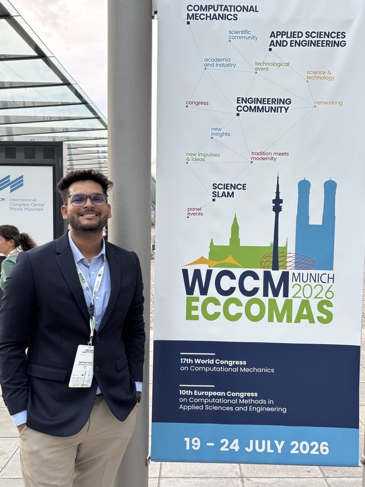

About me
I am a Research Scholar at the Department of Applied Mechanics at IIT Delhi. My research focuses on crystal plasticity, finite element analysis and creep–fatigue interaction. I work on decoding the complex mechanics of nickel-based superalloys using advanced frameworks such as MOOSE, to engineer a stronger and more resilient future. The work is multiscale, linking physics across spatial and temporal scales to simulate systems that no single scale can capture alone.
My current research interests include problems in the following areas:
- Dislocation density-based crystal plasticity
- Creep–fatigue interaction in nickel-based superalloys
- Multiscale materials modelling
- High-temperature deformation of additively manufactured metals
- Damage modelling and life prediction
My CV may be found here.
Contact: Room 4A/14, Block IV, IIT Delhi, Hauz Khas, New Delhi 110016
Email: amz228601@iitd.ac.in
Google Scholar Linkedin Github
If you would like the models or the data behind the papers, please see Software.

What I work on
Creep–fatigue in turbine blades
A dislocation density-based crystal plasticity model, run in MOOSE, that finds where damage accumulates in a nickel superalloy blade and how long it survives.
See the researchHigh-temperature plasticity of printed steel
How LPBF 316L behaves at 850 °C, and how much of that behaviour is inherited from the direction it was printed in.
Read the paperOpen models and data
The CFI-CPFEM implementation and the input decks behind the papers are public, so the results can be reproduced.
Browse the code